Apple Watch와 애플 피트니스에 쌓인 러닝 기록이 미리엄을 처음 켜는 순간 모두 정렬됩니다. 누적 거리·시간, 벨트 등급, 개인 기록, 마일리지 달성이 한 화면에 펼쳐집니다.
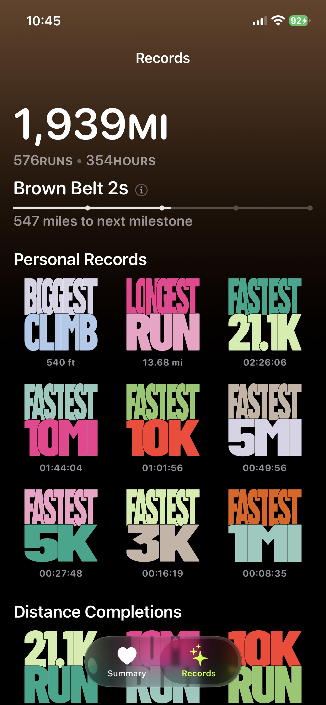
기간(주 · 월 · 년 · 라이프타임), 코스, 표준 거리(1마일·3K·5K·10K·10마일·하프마라톤·20마일·마라톤·100마일 등 13종) 등 다양한 관점에서 거리, 페이스, 심박, 고도, 케이던스 등 10개 이상의 지표 변화를 확인할 수 있습니다.
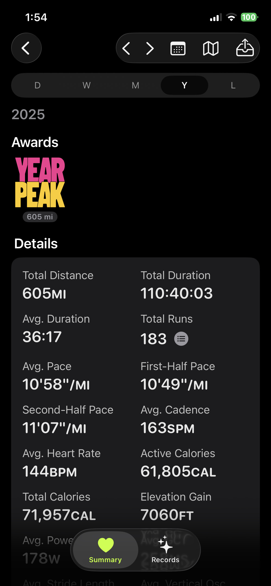
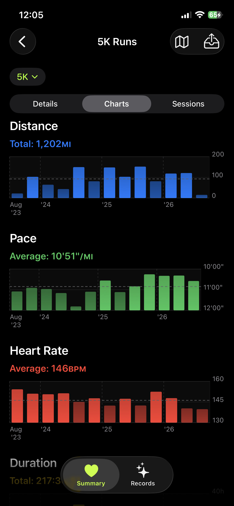
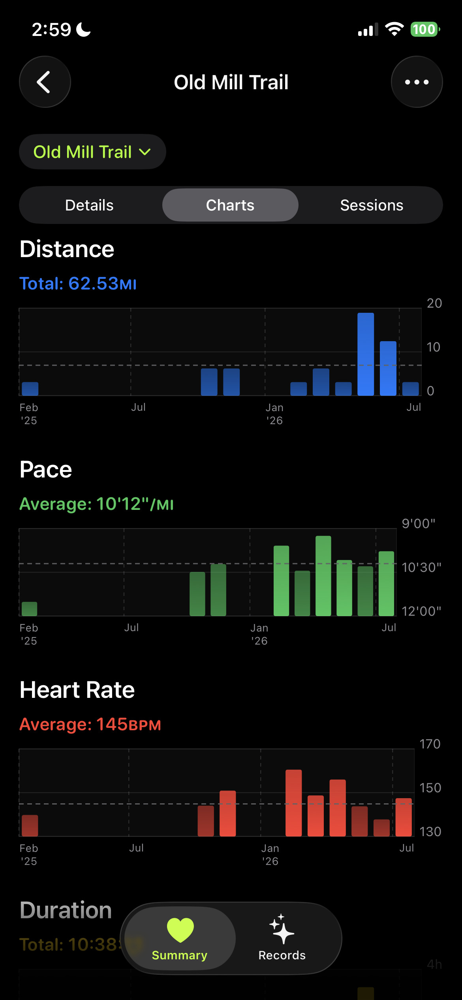
주간 거리, 월간 횟수, 10K 완주 같은 목표를 만들면 기간마다 달성 여부가 기록되고, 연속 달성이 카운트됩니다.
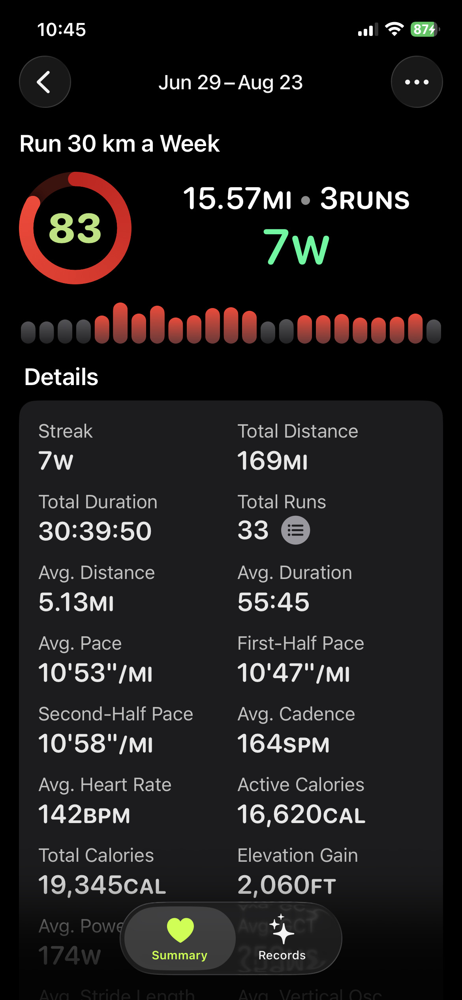
저장된 러닝 하나를 골라 코스로 등록하세요. 과거의 비슷한 경로는 물론, 이후 달린 유사한 GPS 경로까지 같은 코스로 자동 매칭됩니다. 익숙한 길의 페이스, 심박, 거리 추이가 따로 쌓여 몸의 변화를 비교할 수 있습니다.
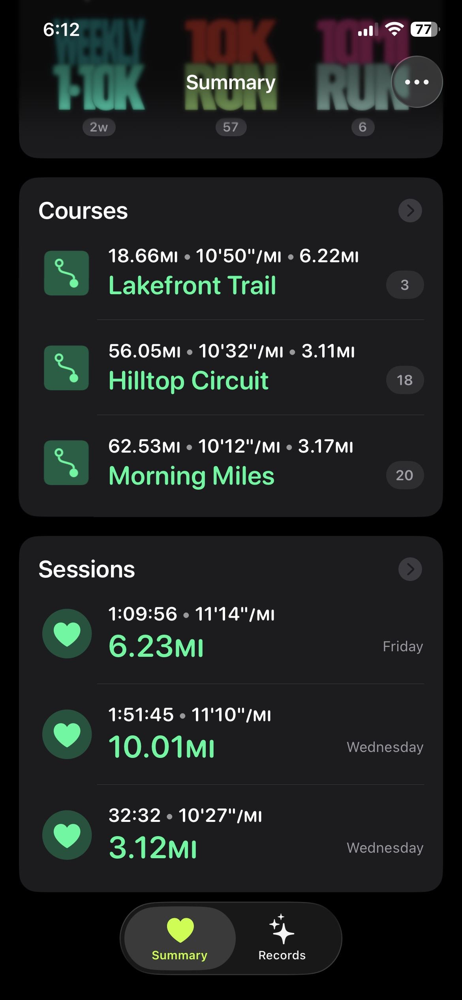
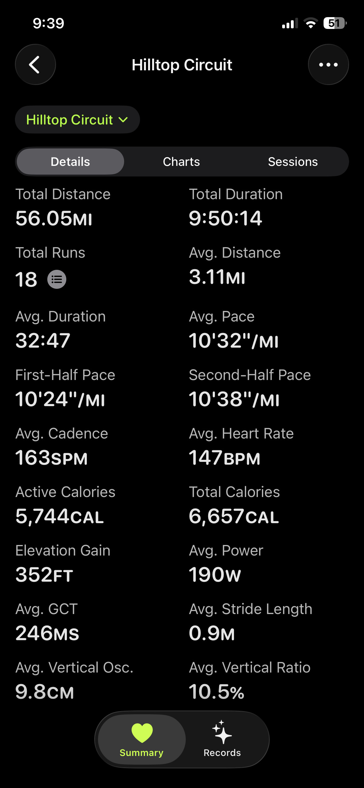
세션 목록을 표준 거리나 코스로 필터링하고 거리, 시간, 페이스, 평균 심박, 케이던스, 파워, 활동 칼로리, 고도 상승, 접지 시간 등 10여 가지 기준으로 정렬할 수 있습니다. 12km 러닝 안의 가장 빠른 10K 처럼, 표준 거리 구간 베스트도 함께 찾아냅니다.
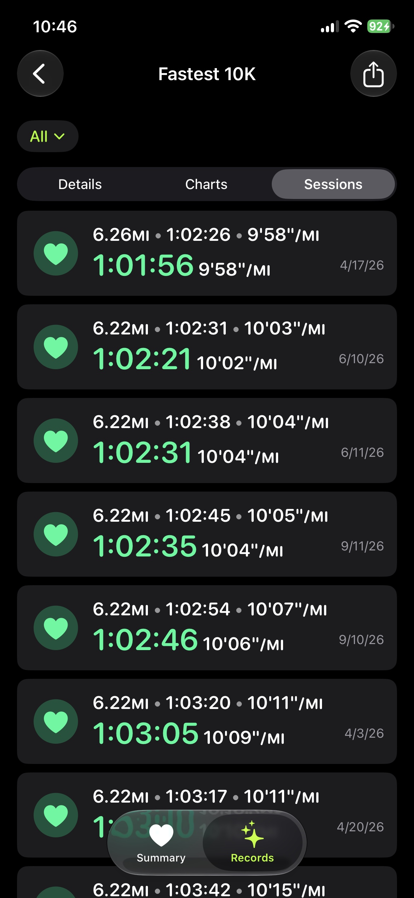
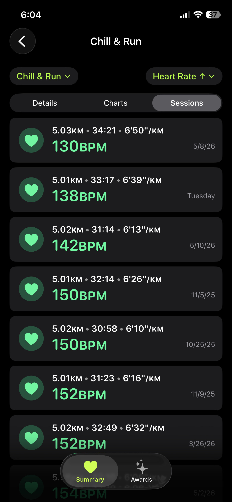
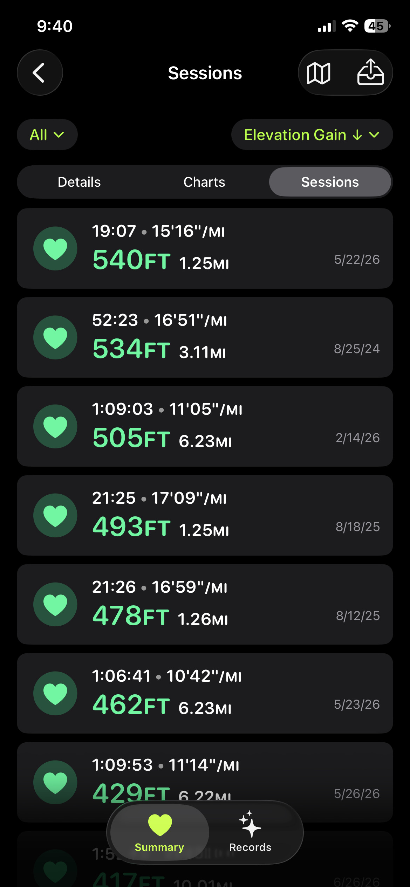
한 러닝의 페이스, 심박, 고도 차트 위에 같은 코스의 과거 평균과 같은 표준 거리의 본인 평균이 함께 표시됩니다. 이번 러닝이 평소보다 빨랐는지 느렸는지가 한눈에 보입니다.
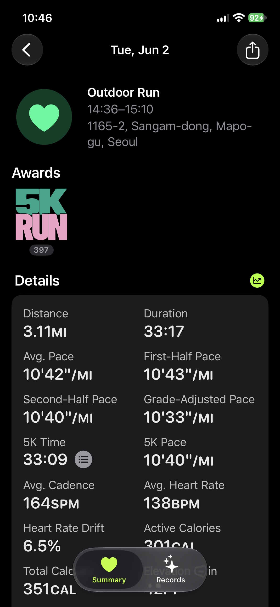
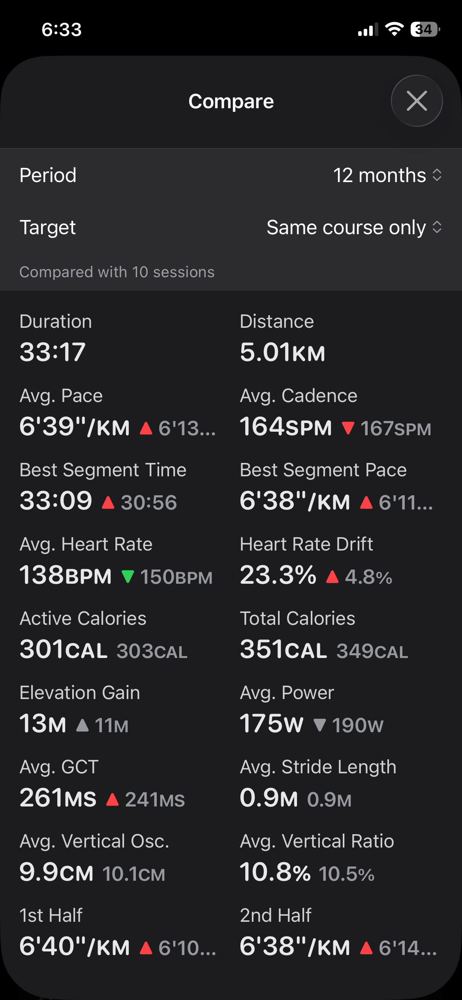
개인 기록, 목표 연속 달성, 마일리지, 연간 메달을 한눈에 확인하세요. 누적 거리는 흰띠부터 파란띠·보라띠를 거쳐 검은띠·빨간띠까지, 벨트 등급으로 장기적인 러닝 여정을 보여줍니다.
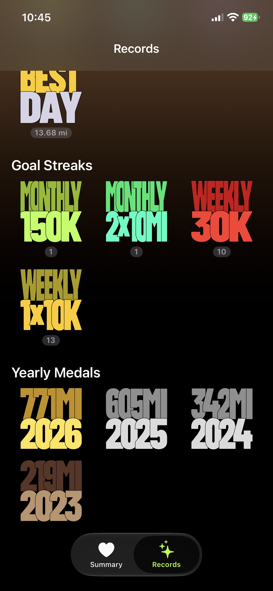
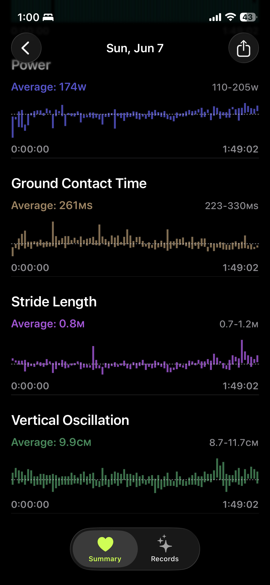
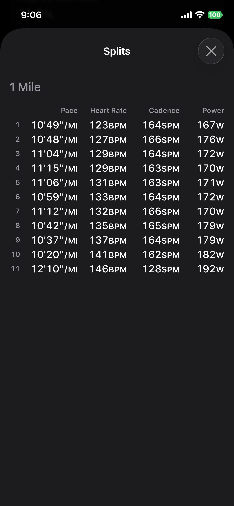
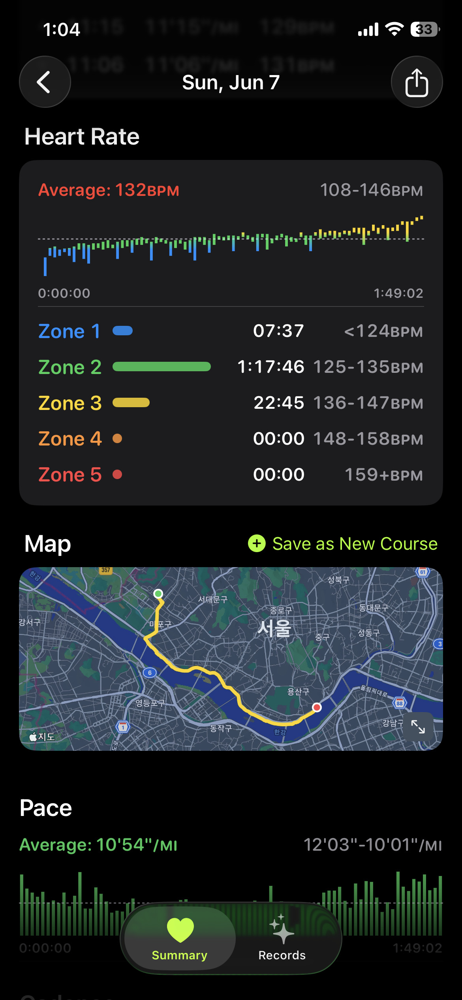
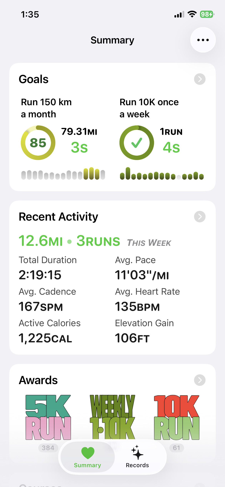
초청 받으신 분은 App Store에서 Apple의 TestFlight 앱을 먼저 설치한 뒤 미리엄을 선택해 사용할 수 있습니다. 정식 출시 전 단계라 일부 기능이 변경될 수 있습니다.
다음 세 채널이 있습니다. 편한 곳으로 보내주시면 됩니다.
스크린샷에 직접 표시하고 코멘트를 남길 수 있습니다. 디바이스 정보가 자동으로 함께 전달됩니다.
TestFlight 앱 → 미리엄 → 피드백 보내기미리엄은 사용자의 건강·운동 데이터를 외부 서버로 전송하지 않습니다. 러닝 기록은 HealthKit 에서 읽어 디바이스 내부에만 저장되며, 분석 SDK, 광고 SDK, 사용자 추적 도구를 일체 사용하지 않습니다.
HealthKit 데이터 처리. HealthKit 에서 읽은 워크아웃·심박·경로 등 건강 정보는 광고 목적으로 사용하지 않으며, 제3자에게 판매하거나 공유하지 않습니다. 외부 분석 서비스로 전송하지 않고, 오직 사용자 본인의 기록을 정리·시각화하기 위한 용도로만 디바이스 내부에서 처리됩니다.
iCloud 동기화 (목표·코스 한정). 앱을 삭제하고 재설치해도 목표와 코스 설정이 복원되도록, 이 두 가지 항목만 Apple 의 iCloud Key-Value Store 에 저장합니다. 러닝 기록, 심박, 경로 등 HealthKit 데이터는 iCloud 에 올리지 않습니다. iCloud 동기화는 사용자가 디바이스에서 iCloud 에 로그인된 경우에만 작동하며, 같은 Apple ID 안에서만 기기 간에 공유됩니다.
외부 통신. 코스 지도 타일은 Apple Maps 에서 가져옵니다. 코스 위치의 동·지명 표기를 위해 좌표를 Apple 의 역지오코딩 API 에 한 차례 보내고 그 결과를 디바이스에 캐시합니다. 두 통신 모두 Apple 의 표준 API 를 통해 처리되며, Apple 의 개인정보 처리방침이 적용됩니다.
데이터 보존 및 삭제. 러닝 기록·캐시·설정은 모두 디바이스 안의 앱 영역에 저장되므로, 앱을 삭제하면 함께 사라집니다. (위 iCloud 항목에 따라 목표·코스만 iCloud 에 별도 보관되며, iCloud 설정 → 저장공간 → 미리엄에서 직접 삭제할 수 있습니다.) HealthKit 원본 데이터는 미리엄이 만들거나 수정하지 않으며, 건강 앱에서 직접 관리됩니다.
문의. 개인정보 처리와 관련한 문의는 GitHub Issues 또는 이메일로 보내주시면 됩니다.
최종 수정일: 2026년 5월 25일